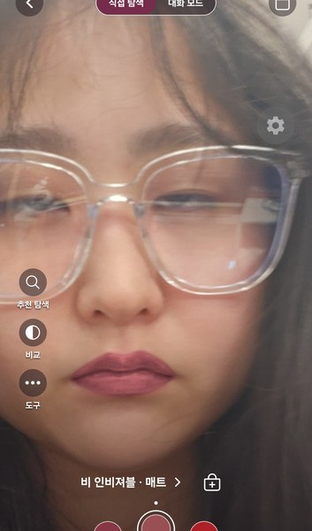
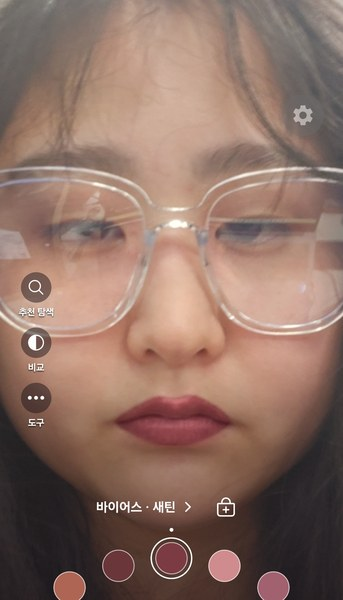
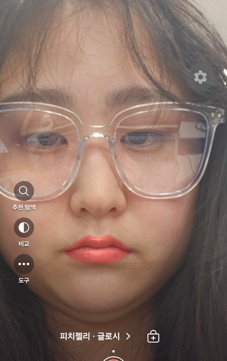
그림 1 최신 AR 실기기 화면(Galaxy, 2026-11-23 캡처). 출처 G:/내 드라이브/ppt/발전도/매트·새틴·글로시찐.jpg. 이 캡처에서 나온 문제(매트 서리 무늬, 윗입술 띠)를 고친 11-23 D안은 폰 재확인 전입니다.
| 얼굴 추적 | MediaPipe Tasks Vision 1.1.1 Face Landmarker 478점 3D (GPU→CPU 대체) |
|---|---|
| 영역 분할 | MediaPipe Image Segmenter selfie multiclass 256 — 배경·피부·머리·가림 |
| 렌더링 | 자체 WebGL + GLSL, 468점 UV 메시 · components/ar/faceTrackerHtml.ts(7,197줄) |
| 앱 | Expo SDK 58 · React Native WebView · Zustand(store/makeupStore.ts) |
| 현재 수준 | AR 패널 8부위(립·블러셔·섀도·아이라인·하이라이터·쉐딩·눈썹·파운데이션) + 마스카라(룩 전용). 립 제형 7종 + 립오일·밤. 조명 통제·보정·안내 3단계 |
| 성과 | 근거 |
|---|---|
| 스티커 → 바른 입술 | 10-22 "2D 스티커 느낌" → 10-23 층 쌓기(맨입술 색만 교체, 주름·조명은 카메라 원본) 실기기 |
| 늦게 따라오던 화장 해결 | 같은 프레임에 그리기, 흔들림 모의 최대 오차 20.8→2.2 px, 깜빡임 6.2→1.2 px |
| 제형을 셰이더 안으로 | 11-12엔 PC 후처리로만 낸 벨벳·크림 질감을 앱 값으로 재현, 매트 제품색 ΔE 8.7→1.5 헤드리스 |
| 조명 대응 3단계 | 옆빛 방향 오차 14.7→6.6°, 어두운 피부 저조도 화장 뜸 1.96~2.57→1.01~1.27배, 안내 0→8조건 |
| 근거 있는 기술 선택 | 얼굴 추적 5종·상용 SDK 3종을 폰에서, 생성 모델 3종을 실제 생성·평가 → 실시간은 자체 AR 유지 |
실기기 폰 캡처·HUD로 확인 · 헤드리스 PC에서 앱 코드를 돌린 오프라인 렌더. 수치는 기존 자료 값을 옮긴 것이며 새로 측정하지 않았습니다. 다른 기기·조건의 수치끼리는 순위를 매기지 않았습니다.
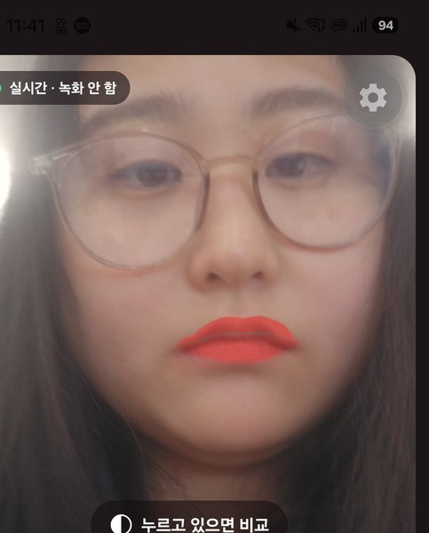
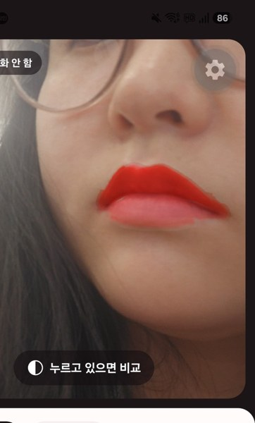
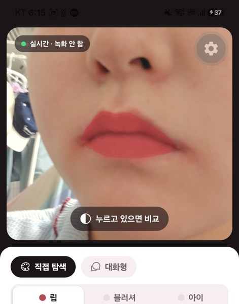
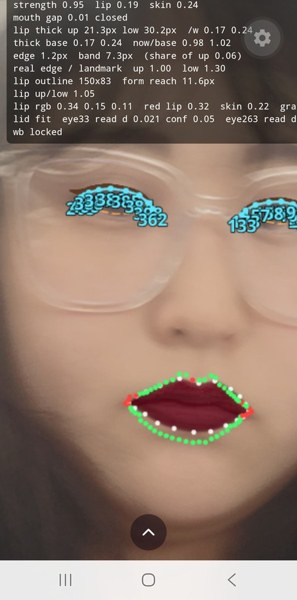
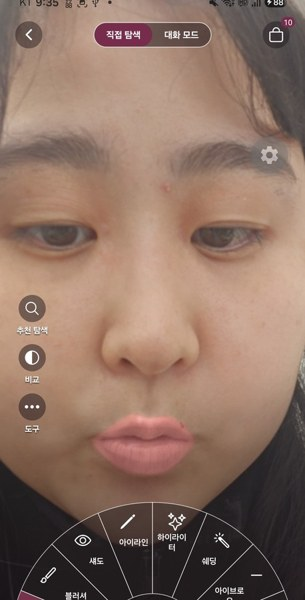
그림 2 같은 사람·Galaxy 실기기. 날짜마다 조명·색·제품이 달라 모습 비교이며 정량 비교가 아닙니다. 얼굴 영역은 MediaPipe로 자동 자름(원본 비율 유지). 모든 원본은 G:/내 드라이브/ppt/발전도/.
| 시기 | 단계 | 무엇을 바꿨나 | 결과 · 근거 |
|---|---|---|---|
| 10-21~23 | 기본 만들기 | 같은 프레임 업로드→점 찾기→그리기. 립 층 쌓기, 화이트밸런스 고정. 10-23 하루 Galaxy로 4번 찍고 고침 | "늦게 따라옴·스티커" 해소 실기기, HUD FPS 23→14(기능 증가) |
| 10-25~29 | 부위 늘리기 | 468점 UV 메시 렌더(첫 커밋 10-25), 아이라인·눈썹·블러셔·파운데이션, 아이라인 6종 | 눈썹 "스티커 같다" 3번 수정 → 카메라 털 명암 유지 방식 |
| 10-30~11-05 | 다듬기·재기 | 실제 바른 사진과 반반 비교, 블라인드 설문(5명), 광택 축소, 치아 가드, 가림 처리, 후보 조명 맞추기 | 설문 "입술 어색" 100%, 치아 칠 25→1%, 입술 위치 F1 0.840(기준 0.887 미달) |
| 11-06~17 | 룩·제형 | 쉐딩 재구현, 시연·영상 룩, 제형 C안(Overlay·detail 셰이더 내재화), 섀도 6마감 | 벨벳·크림 질감을 앱에서 재현 헤드리스 |
| 11-19~23 | 환경·검증 | 조명 3단계(1,000장 재현 실험), 생성 모델 3종 비교, 립 제형 D안(커밋 38b1d52d) | 폰 캡처 1차(조명 4종), D안 폰 확인은 남음 |
출처: VISHUE_AR_변천사_11-05갱신.pdf, docs/AR_PROGRESS.md, Git 로그(faceTrackerHtml.ts 커밋 30개). 자료 차이: AR_PROGRESS.md 상단 마일스톤 표는 M2~M21이 모두 "대기"로 남아 실제 구현과 맞지 않습니다(표 갱신 누락) — 이 보고서는 코드와 일자별 기록을 따랐습니다.
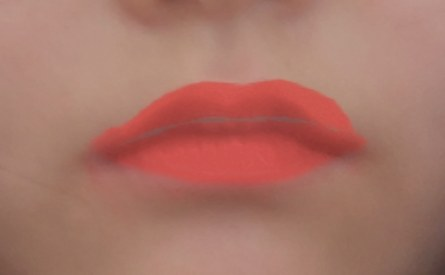
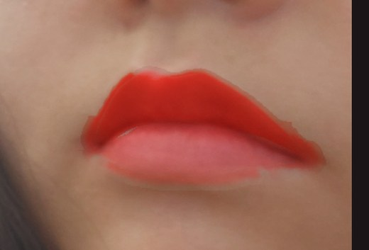
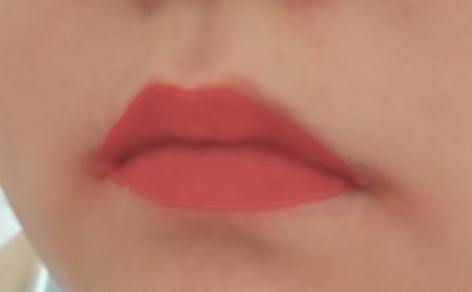
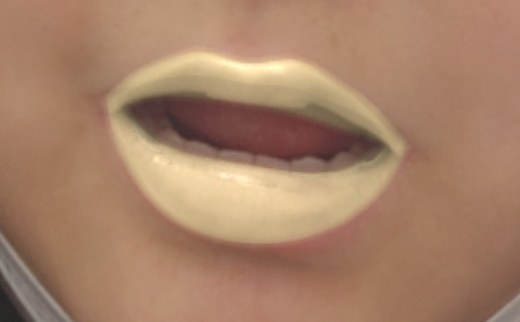
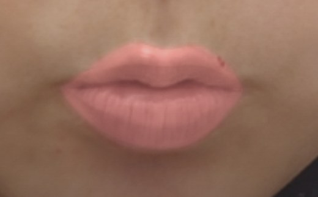
그림 4 Galaxy 실기기 입술 확대(MediaPipe 입술 점 기준 자동 자름). 출처 발전도/입술2.jpg, KakaoTalk_20261023_091529383_02, …1025_181616182_02, 입침범.jpg, …1117_093658060_01
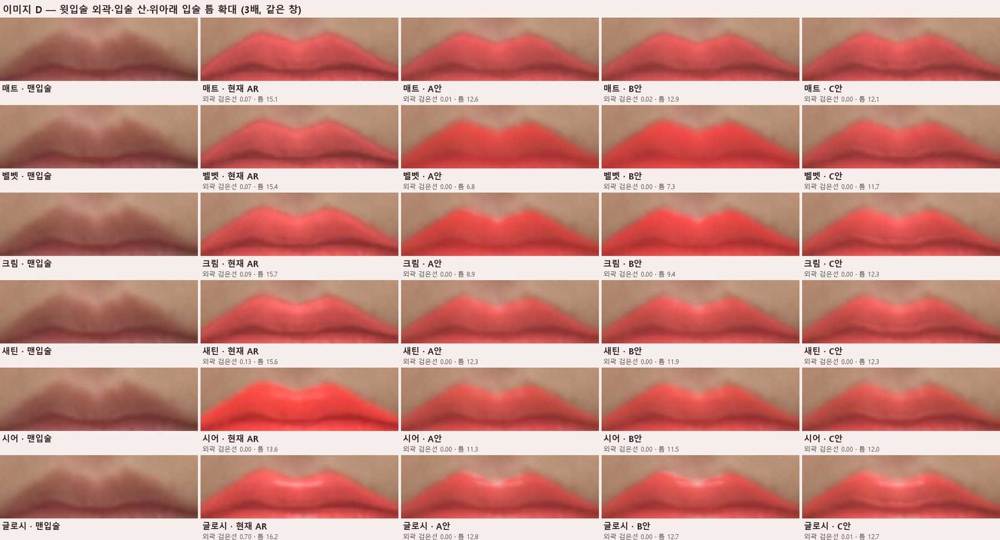
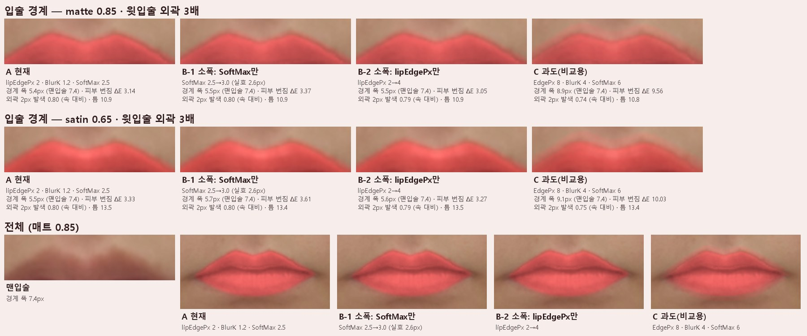
| 문제 | 바꾼 방법 · 결과 |
|---|---|
| 측면 톱니, 입술 사이 점선 | 경계 판정을 UV에 누적, 다문 입 처리, 경계 띠 8→5 px(10-23) |
| 벌린 입 안쪽 미칠, 바깥 붉은 띠 | 벌림 정도에 따라 안쪽 선 이동(LaPa 벌린 입 1,132장 근거, 10-25) |
| 안쪽으로 갈수록 연함 | 농도 그라데이션 제거(풀립, 10-27) |
| 치아가 빨갛게 칠해짐 | 맨입술보다 덜 붉고 밝은 곳 제외: 치아 칠 25→1%(정지 5장×3색, 11-03). 크림 입안 칠 18.3→14.3%(11-04) |
| 손·컵이 가린 곳 위에 립 | 분할 마스크로 가린 부위만 칠 줄임(11-04) |
| 윗입술 선·흔들림 | 틈 깊이 맞춤(11-13), 경계 흔들림 안정화(11-15) |
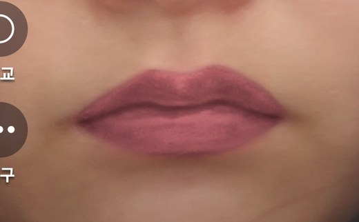
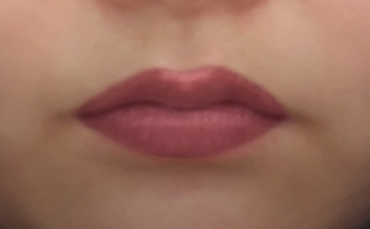
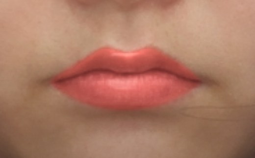
그림 7 출처 발전도/매트·새틴·글로시찐.jpg. 수치는 같은 증상을 얼굴 5장 헤드리스로 재현해 잰 값(AR_PROGRESS 11-23 (25)).
| 시기 | 광택·질감 변화 |
|---|---|
| 10-25 | 글로시가 "투명한 걸 올린 것 같다" → 반사광 오판 수정 |
| 11-02 | 설문: 질감·광택 이상 75% → 하얀 광택 판을 작고 부드럽게 |
| 11-03 | 주름 따라 잔 반짝임 보존: 결 보존 0.87→0.99(공개 얼굴 5장) |
| 11-13 | C안: PC 합성이던 Overlay를 셰이더 안으로, detail로 벨벳·크림 매끈함 |
| 11-15 | 제형별 주름결 반사 cavity(벨벳 2.5 … 글로시 1.2) |
| 11-23 | D안: 매트 glossScale 0.3, 새틴·글로시 rimTilt 0.3, 글로시 비침 0.28→0 |
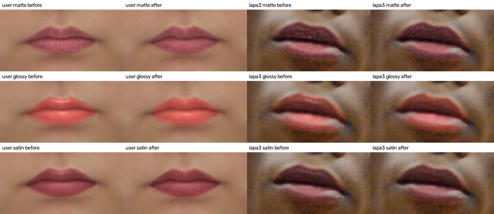
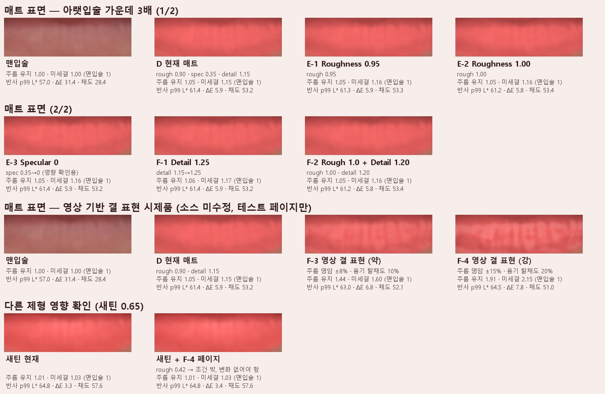
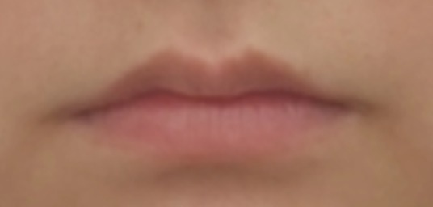
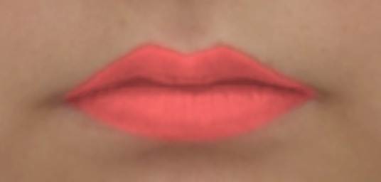
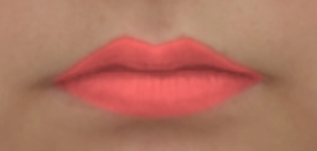
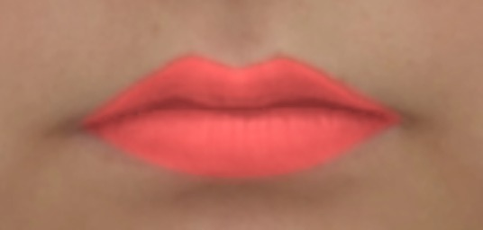
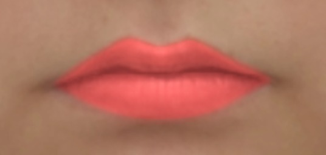
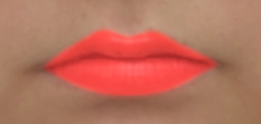
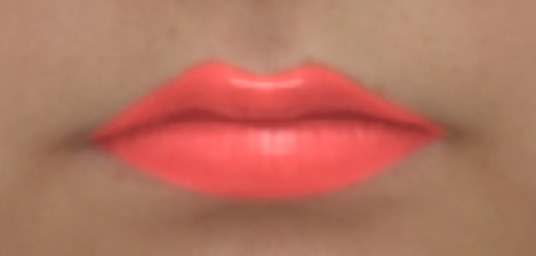
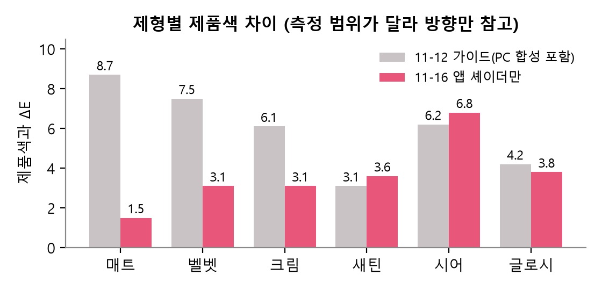
그림 10 출처 G:/내 드라이브/ppt/lip_ABC/png/*_current_ar.png, bare_lips.png(PC 헤드리스, 진하기는 lip_ABC 설정). 11-15 cavity·11-23 D안은 반영 전 이미지. 그래프: Claude outputs/VISHUE_립제형_고도화전후_비교.pdf 1쪽 값(측정 범위가 달라 방향만 참고).
| 제형 | 카탈로그 | 의도 | 현재 파라미터 | 현재 문제 (확정 / 후보) | 개선 방향 |
|---|---|---|---|---|---|
| Matte | 39 | 무광, 선명, 주름 보임 | rough 0.90 · spec 0.35 · a₁ 0.72 · detail 1.15 · overlay 0 · glossScale 0.3 | 확정: 폰 서리 무늬. 후보: 부분 밝기 불균일 | D안 폰 확인(광택 면적) |
| Velvet | 103 | 보송, 주름을 메워 매끈 | rough 0.75 · a₁ 0.66 · detail 0.75 · overlay 0.35 · cavity 2.5 | 후보: UI에서 매트 칩에 묶여 구분 안 됨 | 칩 분리 여부 결정 |
| Cream | 41 | 촉촉, 은은한 윤기 | rough 0.55 · spec 0.60 · 비침 0.12 · detail 0.90 · overlay 0.30 | 확정: 입 벌림 시 이빨 쪽 덮음(부분 수정) | 큰 입 벌림 수치 측정 |
| Satin | 101 | 은은한 새틴광 | rough 0.42 · spec 0.85 · a₁ 0.50 · overlay 0.20 · rimTilt 0.3 | 확정: 폰 윗입술 띠. 제품색 ΔE 3.1→3.6 | D안 폰 확인, 바이어스 제형 불일치 정리 |
| Sheer | 40 | 맑은 투명 발색 | 비침 0.80 · opacity 0.75 · a₁ 0.38 | 확정(헤드리스): 제품색 ΔE 6.8로 가장 멂 | 실착 사진 정답 기준 필요 |
| Glossy | 283 | 물광, 가장 높은 윤기 | rough 0.16 · spec 1.15 · 비침 0 · overlay 0.10 · cavity 1.2 · rimTilt 0.3 | 확정: 폰 윗입술 띠. 위 조명이 아니면 광택 약함 | 정면 조명에서 반사 위치·강도 확인 |
Shimmer(10개)·립오일·밤도 구현돼 있으나 비교 자료가 없어 표에서 뺐습니다. UI 칩은 5개(벨벳→매트, 시어→글로시로 묶음, lib/lipCare.ts).
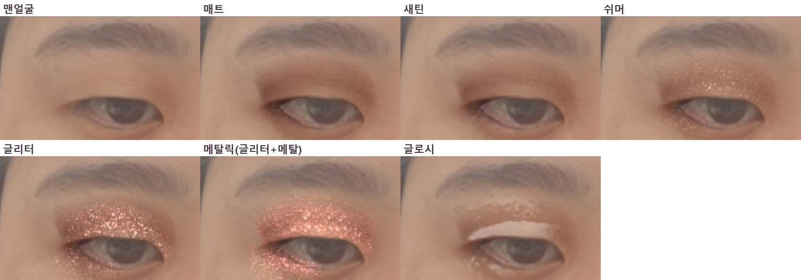
| 제형 | 의도한 펄감 (참고 이미지) | 현재 구현 (코드) | 이번 렌더 측정 (눈꺼풀 변화 영역) | 비고 |
|---|---|---|---|---|
| 매트 | 펄 없음, 보송, 가장 자연스러운 음영 (광택감 1/5) | 입자 없음 · 덮임 0.95 · rough 1.0 · spec 0 | 반짝 알갱이 0 · ΔE00 6.5(가장 진함) · 밝기 평균 −7.2 L* | 음영만 남음 |
| 새틴 | 아주 미세한 펄, 은은한 윤기 | 입자 없음, 넓은 비단 윤기 · 덮임 0.85 · rough 0.55 · spec 0.45 | 알갱이 0 · ΔE00 5.0 · 밝기 −5.7 | 입자 대신 넓은 윤기로 표현 |
| 쉬머 | 작고 고운 펄, 은은한 반짝임 | 보로노이 둥근 점 · 칸 0.85 · 밀도 0.75 · flash 1.2 · 미세 가루 0.5 · 덮임 0.65 · rough 0.4 · spec 0.4 | 알갱이 1.3/1,000화소 · 상위 1% +1.7 L* · ΔE00 3.8 | 가장 연하고 고움 |
| 글리터 | 크고 다양한 크기의 펄, 화려한 반짝임 | 칸 면 조각(틈 0.14) · 칸 2.0(11-19 v8) · 밀도 0.75 · flash 5.5 · 4갈래 별빛 1.0 · 무지개빛 0.35 · 덮임 0.9 · rough 0.2 · spec 0.95. 스팽 등 큰 입자 제품은 큰 칸 유지 | 알갱이 8.5 · 상위 1% +16.1 L* · ΔE00 4.9 · 밝기 −3.4 | 입자 크기는 제품명으로 추정 |
| 메탈릭 | 밀도 높은 펄, 강하고 선명한 금속 광택 (광택감 4/5) | UI 칩 없음. 제품명에 메탈·포일·크롬이 있으면 글리터 칩이 이 경로 · 밀도 1.0 · flash 3.0 · 별빛 0.5 · 중앙 반사 1.0 · 덮임 0.85 · rough 0.3 · spec 1.0 | 알갱이 8.3 · 상위 1% +20.0 L* · 밝기 +1.4(유일하게 맨얼굴보다 밝아짐) · ΔE00 5.3 | 참고 이미지(글리터 5/5 > 메탈릭 4/5)와 순서가 다름 — 아래 확인 필요 |
| 글로시 | 투명한 광택, 촉촉. 펄은 선택 | 입자 없음, 카메라에서 이미 빛받는 접힘에 흰 젖은 막 하이라이트 · 덮임 0.5 · rough 0.05 · spec 0.9 | 알갱이 0.5 · 상위 1% +10.2 L* · ΔE00 3.3 | 이 렌더에서 눈꺼풀 위 흰 띠로 보임(1장) |
반짝 알갱이 = 주변 평균(가우시안 σ4)보다 L*가 10 넘게 밝은 화소 덩어리 수. 변화 영역 = 6제형 중 하나라도 맨얼굴과 ΔE00 > 2가 된 화소(20,209화소). 한 얼굴·한 색·정지 프레임 1회 렌더라 경향 참고용이며, 이번 보고서 작업에서 현재 코드(커밋 4c4262e7)로 새로 잰 값입니다(앱 코드 변경 없음, research/makeup_gen/ar_zone_render.mjs).
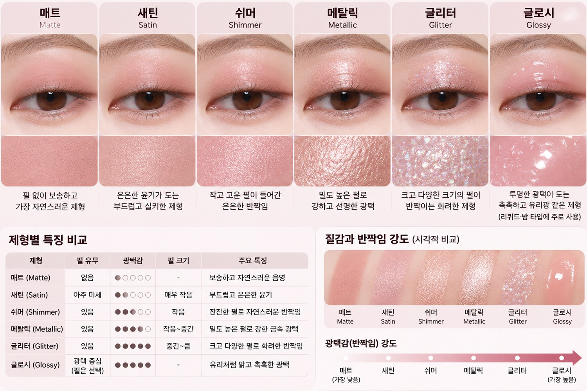
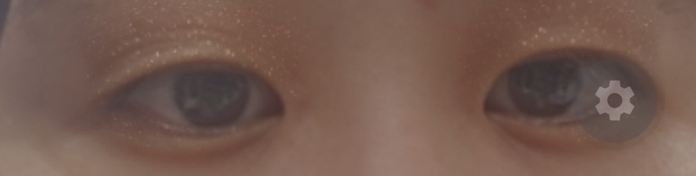
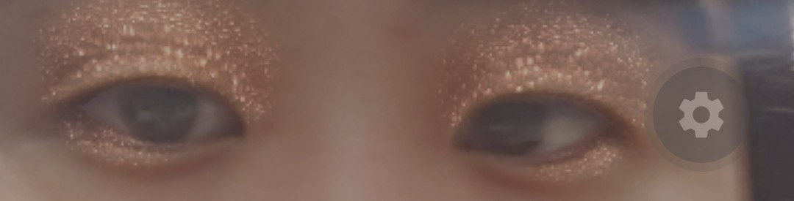
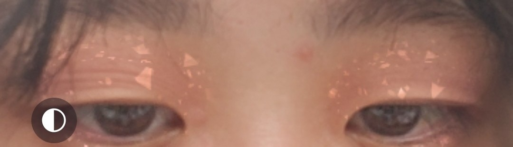
그림 C 출처 발전도/쉬머 펄 조절·메탈릭 펄·아이섀도우 글리터.jpg(위쪽 상태 표시줄·아래 패널은 잘라 냄)
| 부위 | 상태 | 실기기 근거 · 한계 |
|---|---|---|
| 립 · 블러셔 · 파운데이션 | 사용 가능 | 10-30 실제 바른 사진과 반반 비교 |
| 섀도 · 아이라인 · 눈썹 | 사용 가능 | 11-07~17 폰 캡처. 눈 부위 정답 정확도 없음 |
| 하이라이터 | 사용 가능 | 11-11 캡처, 정량 평가 없음 |
| 쉐딩 | 제한적 | 11-05 HUD 점검, 정답 비교 미측정 |
| 마스카라 · 영상 룩 | 제한적 | 룩 전용 / 설윤 뿌까 1개 |
| 컨실러 등 | 미구현 | MakeupZone 타입에 없음 |
| 지표 | 측정값 · 조건 |
|---|---|
| FPS (실기기 HUD) | 11-20 같은 폰: 창가 30 · 실내 25 · 스탠드 19 · 불 끈 방 15. 프레임 p50/p95 28~33 / 54~102 ms |
| 얼굴 감지 | 폰 HUD 33.4 ms(11-08) · iOS 비교 평균 57.0 ms(11-01) |
| 모델 로딩 · 메모리 | 측정 자료 없음 |
| 안정화 | 흔들림 모의 20.8→2.2 px, 깜빡임 6.2→1.2 px, 실기기 녹화 얼굴 놓침 0/155 |
| 색 일치 | 착용 사진 20쌍 중앙값 3.89→3.97(11-02). 1명·1제품 실측 hex 1.13~2.97(11-23) |
| 경계 | LaPa 입술 F1 0.736(얼굴 점) · 11-05 위치 F1 0.840/기준 0.887 |
| 자연스러움 | 설문 5명: 입술 어색 100%(11-02). 이후 재설문 없음 |
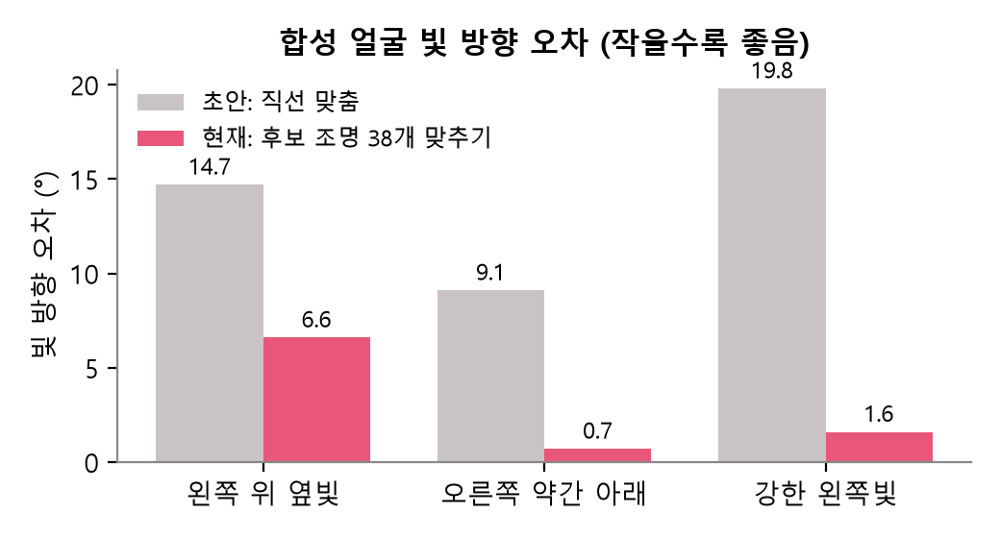
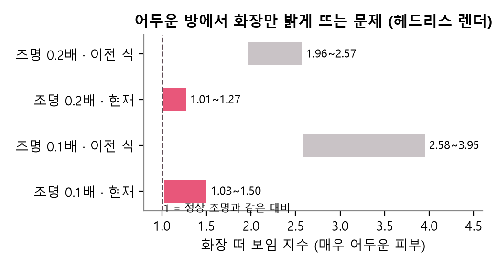
그림 11 빛 방향(합성 얼굴)·어두운 방 화장 뜸(헤드리스). 안내 판정: 평가 분할 200장에서 정상 조명 저조도 오탐 0/0/0%(피부톤 3종), 역광 오탐 0%. 출처 VISHUE_AR_조명대응_구조_변경_근거.pdf
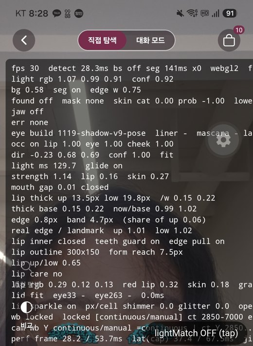
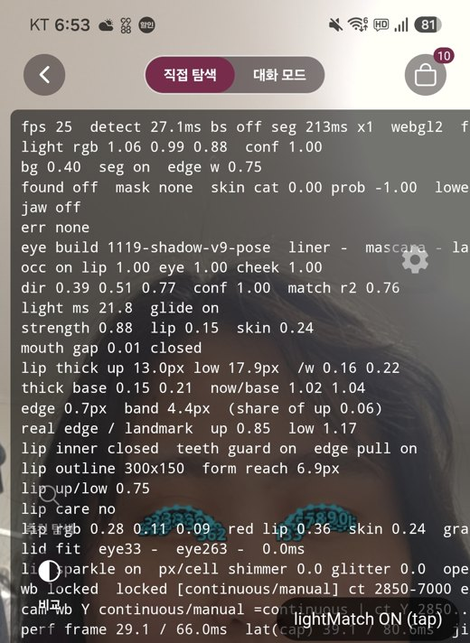
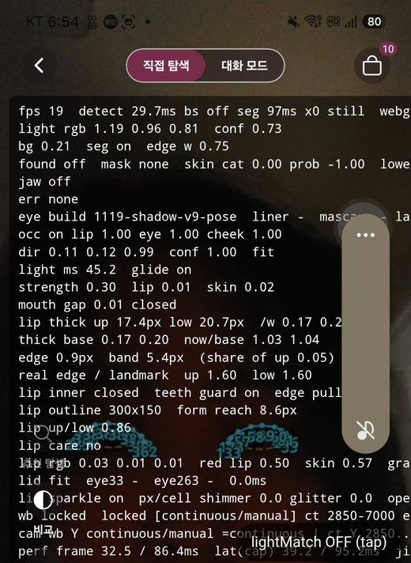
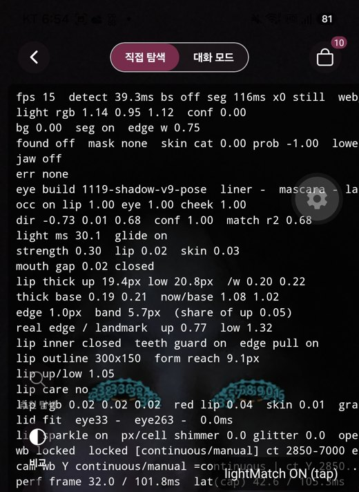
그림 12 11-20 폰 캡처 1차(HUD). WB 잠금 성공, 저조도는 불 끈 방만 켜짐(정상). 발전도/1~4.*.jpg
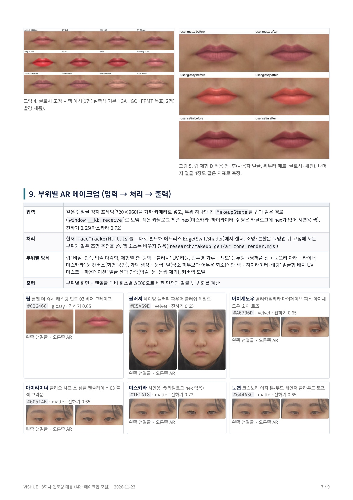
| 입력 | 맨얼굴 720×960 정지 프레임을 가짜 카메라로 넣음. 부위 하나만 켠 MakeupState: 카탈로그 제품 hex(마스카라·하이라이터·쉐딩은 카탈로그에 hex가 없어 시연용 색), 진하기 0.65(마스카라 0.72) |
|---|---|
| 처리 | 현재 faceTrackerHtml.ts를 그대로 빌드해 헤드리스 Edge에서 렌더. 조명·분할은 워밍업 뒤 고정해 모든 부위가 같은 조명 추정을 씀. 앱 소스는 바꾸지 않음(research/makeup_gen/ar_zone_render.mjs) |
| 출력 | 부위별 화면 + 맨얼굴 대비 화소별 ΔE00으로 바뀐 면적·얼굴 밖 변화 계산(다음 쪽 표) |
| 립 | 바깥−안쪽 입술 다각형, 제형별 층·광택 (MATERIALS) |
|---|---|
| 블러셔 | UV 타원, 반투명 가루 |
| 아이섀도 | 눈두덩→쌍꺼풀 선 + 눈꼬리 아래, 제형별 펄(06-2쪽) |
| 아이라이너·마스카라 | 눈 캔버스(화면 공간), 가닥 생성 |
| 눈썹 | 국소 피부보다 어두운 화소(털)에만 색 |
헤드리스 정지 프레임이라 폰 화면(카메라 반사·움직임)과 다를 수 있습니다. 마스카라는 앱에서 룩 AR에서만 칠합니다.
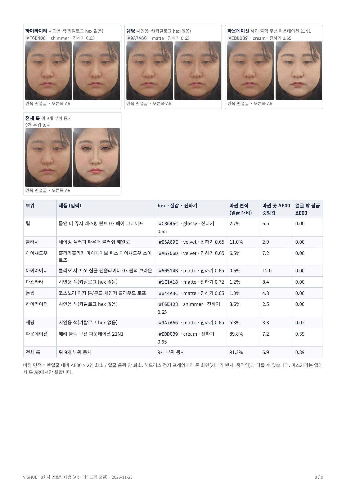
| 부위 | 제품 · hex · 질감 | 바뀐 면적 (얼굴 대비) | 바뀐 곳 ΔE00 중앙값 | 얼굴 밖 평균 ΔE00 |
|---|---|---|---|---|
| 립 | 롬앤 03 베어 그레이프 #C3646C · glossy | 2.7% | 6.5 | 0.00 |
| 블러셔 | 네이밍 헤일로 #E5A69E · velvet | 11.0% | 2.9 | 0.00 |
| 아이섀도 | 홀리카홀리카 소이 로즈 #A6706D · velvet | 6.5% | 7.2 | 0.00 |
| 아이라이너 | 클리오 03 블랙 브라운 #60514B · matte | 0.6% | 12.0 | 0.00 |
| 마스카라 | 시연용 #1E1A18 · 진하기 0.72 | 1.2% | 8.4 | 0.00 |
| 눈썹 | 코스노리 클라우드 토프 #644A3C · matte | 1.0% | 4.8 | 0.00 |
| 하이라이터 | 시연용 #F6E4D8 · shimmer | 3.6% | 2.5 | 0.00 |
| 쉐딩 | 시연용 #9A7A66 · matte | 5.3% | 3.3 | 0.02 |
| 파운데이션 | 헤라 블랙 쿠션 21N1 #EDD0B9 · cream | 89.8% | 7.2 | 0.39 |
| 전체 룩 | 위 9개 부위 동시 | 91.2% | 6.9 | 0.39 |
바뀐 면적 = 맨얼굴 대비 ΔE00 > 2인 화소 / 얼굴 윤곽 안 화소.
얼굴 1명·정지 프레임 1장 기준 헤드리스 값이며, 폰 실기기 측정이 아닙니다. 마스카라·하이라이터·쉐딩은 시연용 색이라 제품 정확도와 무관합니다.
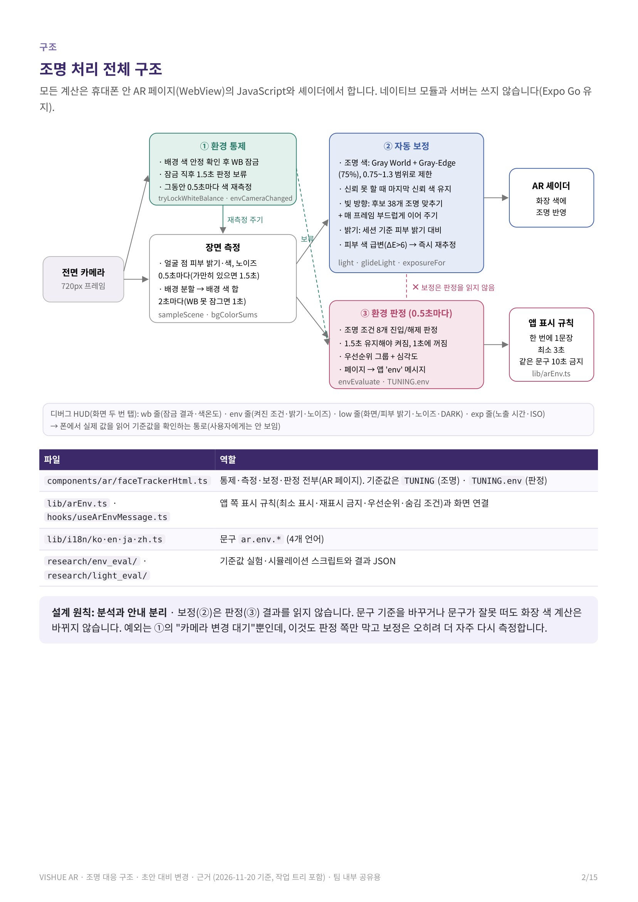
| 단계 | 하는 일 | 실사화에 주는 효과 |
|---|---|---|
| ① 환경 통제 | 배경 색이 안정되면 화이트밸런스 잠금, 잠금 직후 1.5초 판정 보류 + 0.5초마다 색 재측정 (tryLockWhiteBalance · envCameraChanged) | 카메라가 스스로 색을 바꾸지 못해 맨입술과 칠한 립이 따로 놀지 않음 |
| ② 자동 보정 | 조명 색(Gray World + Gray-Edge 75%), 빛 방향(후보 38개), 밝기(세션 기준)를 추정해 셰이더로 (sampleScene · light · glideLight · exposureFor) | 립·블러셔가 피부와 같은 빛·그늘 아래 있는 것처럼 보임 |
| ③ 환경 판정 | 조명 조건 8개를 0.5초마다 진입/해제 판정, 앱이 한 번에 한 문장 표시 (envEvaluate · lib/arEnv.ts) | 보정으로 못 맞추는 환경에서는 사용자가 환경을 바꾸게 함 |
코드 위치는 현재 저장소와 같음을 확인(components/ar/faceTrackerHtml.ts, lib/arEnv.ts, hooks/useArEnvMessage.ts, 커밋 38b1d52d).
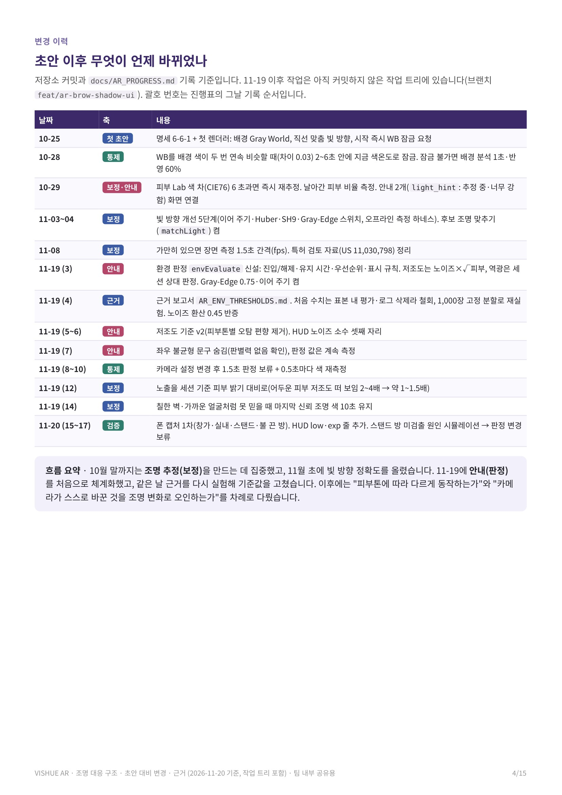
| 시기 | 무엇에 집중했나 |
|---|---|
| 10-25 ~ 10-29 | 조명 추정(보정)을 만듦: 첫 초안 → WB 잠금 시점 제어 → 조명 급변 시 즉시 재추정, 안내 2개 연결 |
| 11-03 ~ 11-08 | 빛 방향 정확도: 5단계 실험 후 후보 조명 맞추기만 켬, 가만히 있을 때 측정 간격을 늘려 fps 확보 |
| 11-19 | 안내(판정)를 처음 체계화, 같은 날 근거를 다시 실험해 기준값 수정. 이어서 "피부톤에 따라 다르게 동작하는가", "카메라가 스스로 바꾼 것을 조명 변화로 오인하는가"를 차례로 다룸 |
| 11-20 | 폰 캡처 1차 검증(창가·실내·스탠드·불 끈 방), HUD low·exp 줄 추가 |
원본과 달라진 점: 원본(11-20)은 "11-19 이후 작업은 아직 커밋하지 않은 작업 트리(feat/ar-brow-shadow-ui)"라고 적었습니다. 이 작업은 이후 11-23 커밋 38b1d52d에 들어갔습니다.
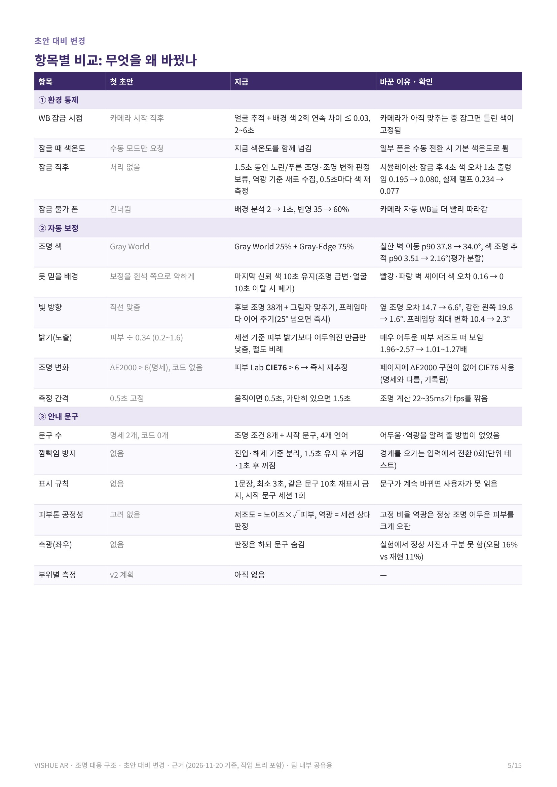
| 항목 | 초안 → 지금 | 확인 결과 |
|---|---|---|
| WB 잠금 시점 | 카메라 시작 직후 → 얼굴 추적 + 배경 색 안정 후(2~6초) | 카메라가 아직 맞추는 중에 잠가 틀린 색이 고정되던 문제 해소 |
| 잠금 직후 | 처리 없음 → 1.5초 판정 보류 + 0.5초 재측정 | 잠금 후 4초 색 오차(1초 출렁임) 0.195→0.080, 실제 램프 0.234→0.077 |
| 조명 색 | Gray World → GW 25% + Gray-Edge 75% | 칠한 벽 이동 p90 37.8→34.0°, 색 조명 추적 p90 3.51→2.16° |
| 못 믿을 배경 | 흰색 쪽으로 약하게 → 마지막 신뢰 색 10초 유지 | 빨강·파랑 벽 셰이더 색 오차 0.16→0 |
| 빛 방향 | 직선 맞춤 → 후보 38개 + 이어 주기 | 옆빛 14.7→6.6°, 강한 왼쪽 19.8→1.6°, 프레임당 변화 10.4→2.3° |
| 밝기(노출) | 피부 ÷ 0.34 → 세션 기준 피부 밝기 대비 | 매우 어두운 피부 저조도 떠 보임 1.96~2.57→1.01~1.27배 |
| 측정 간격 | 0.5초 고정 → 가만히 있으면 1.5초 | 조명 계산 22~35 ms가 fps를 깎던 것 완화 |
| 안내 문구 | 명세 2개·코드 0개 → 조명 조건 8개, 4개 언어 | 경계를 오가는 입력에서 전환 0회(단위 테스트) |
| 피부톤 공정성 | 고려 없음 → 저조도 = 노이즈×√피부, 역광 = 세션 상대 | 고정 비율 역광은 정상 조명 어두운 피부를 크게 오판하던 것 해소 |
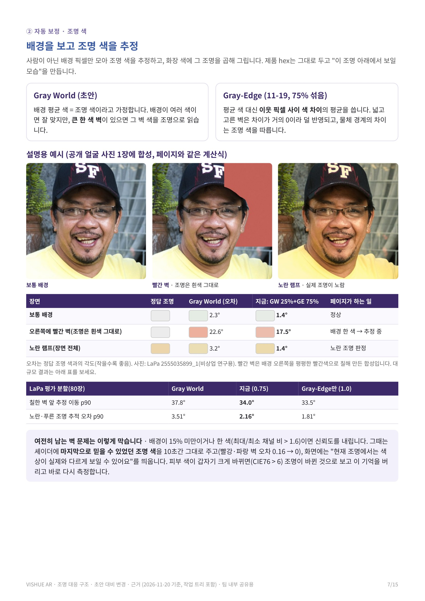
| 초안 (10-25) | 배경 평균 색 = 조명 색(Gray World). 넓은 한 색 벽이 있으면 벽 색을 조명으로 오인 → 빨간 벽 앞에서 립·블러셔가 빨갛게 물듦 |
|---|---|
| 지금 (11-19) | Gray World 25% + Gray-Edge 75%: 평균 색 대신 물체 경계의 색 차이를 봄. 고른 벽은 차이가 0이라 덜 반영되고, 경계에는 조명 색만 남음 |
| 못 믿을 때 | 배경이 15% 미만이거나 한 색이면 마지막으로 믿을 수 있던 조명 색을 10초 유지, 화면에는 "색상이 다르게 보일 수 있어요" 안내 |
| 장면 | Gray World | 지금 |
|---|---|---|
| 빨간 벽 (조명은 흰색) | 22.6° | 17.5° |
| 노란 램프 (실제 노란 조명) | 3.2° | 1.4° |
| 칠한 벽 앞 추정 이동 p90 (LaPa 80장) | 37.8° | 34.0° |
| 노란·푸른 조명 추적 p90 | 3.51° | 2.16° |
| 빨강·파랑 벽 셰이더 색 오차 | 0.16 | 0 (신뢰 색 유지) |
수치는 합성·평가 분할 실험(공개 얼굴 LaPa, 비상업 연구용)이며 폰 실측이 아닙니다. 칠한 벽 문제는 완전히 해결되지 않았습니다(초록·베이지 벽 일부는 신뢰 검사를 통과해 막지 못함).
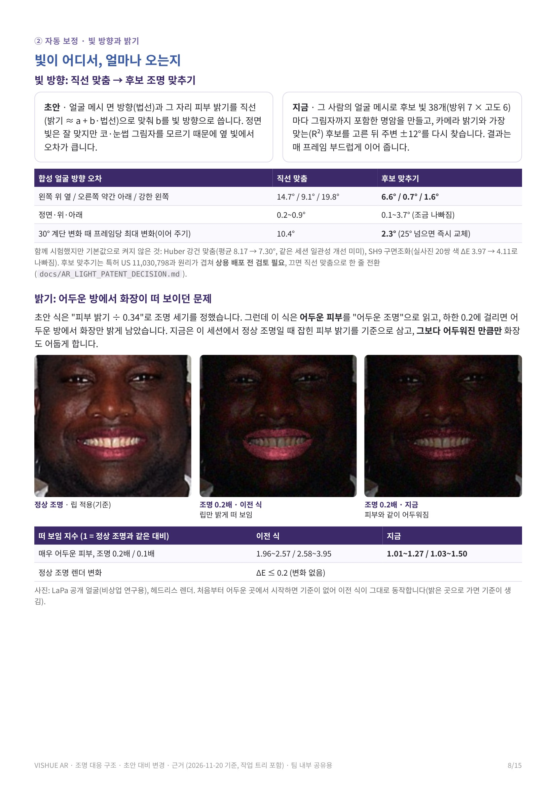
| 초안 | 얼굴 면 방향과 피부 밝기를 직선으로 맞춤. 코·눈썹 그림자를 몰라 옆빛에서 오차가 큼 |
|---|---|
| 지금 (11-04 켬) | 그 사람 얼굴 메시로 후보 빛 38개의 명암(그림자 포함)을 만들고 카메라와 가장 맞는 것을 고름. 매 프레임 부드럽게 이어 줌 |
| 결과 (합성 얼굴) | 왼쪽 위 옆빛 14.7→6.6°, 오른쪽 약간 아래 9.1→0.7°, 강한 왼쪽 19.8→1.6°. 30° 계단 변화 때 프레임당 최대 변화 10.4→2.3°(광택이 튀지 않음) |
| 실기기 | 11-04 폰에서 옆 조명일 때 윤기·그늘이 빛 쪽을 따르는 것을 확인하고 켬 실기기 |
| 매우 어두운 피부 · 떠 보임 지수 (1 = 정상) | 이전 식 | 지금 |
|---|---|---|
| 조명 0.2배 | 1.96~2.57 | 1.01~1.27 |
| 조명 0.1배 | 2.58~3.95 | 1.03~1.50 |
| 정상 조명 렌더 변화 | ΔE ≤ 0.2 (밝은 곳은 그대로) | |
밝기 수치는 헤드리스 렌더. 처음부터 어두운 곳에서 시작하면 기준이 없어 이전 식이 동작합니다. 후보 조명 맞추기는 특허 US 11,030,798과 원리가 겹쳐 상용 전 검토가 필요합니다.
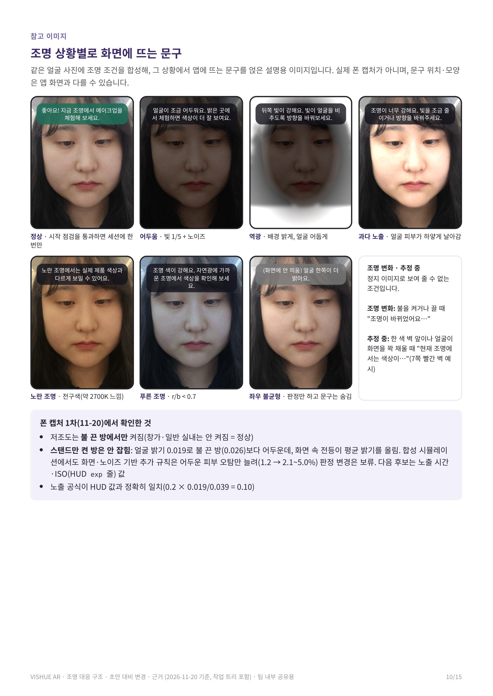
| 상황 | 켜지는 기준 (요약) | 평가 분할 결과 |
|---|---|---|
| 어두움 | 화면 밝기 < 0.03, 또는 노이즈×√피부 > 0.0128 (피부톤 영향 제거) | 정상 조명 오탐 0/0/0%(피부톤 3종), 어두운 방 87.5~97.5% |
| 역광 | 세션 기준의 0.5배 이하 + 배경/얼굴 비 2배 이상 | 오탐 0%, 재현 52.5~75% |
| 과다 노출 | 피부의 15% 이상이 하얗게 날아감 | 재현 79~85% |
| 노란·푸른 조명 | 배경 r/b > 2.0 / < 0.7 | 노란 LaPa 70%, 푸른 21% |
| 조명 변화 · 추정 중 | 노출·조명 색 급변 / 배경 신뢰도 < 0.5 | 정지 이미지로 보일 수 없음 |
| 좌우 불균형 | 판정만, 문구 숨김 | 정상 사진과 구분 못 함 |
왼쪽 원본의 상황별 사진은 같은 얼굴 사진에 조명을 합성한 설명용 이미지이며 실제 폰 캡처가 아닙니다. 문구 위치·모양은 앱 화면과 다를 수 있습니다.
| 방법 | 진행 단계 | 환경 · 시간 | 입술 ΔE00 |
|---|---|---|---|
| VISHUE AR | 실기기 실시간 | 폰 WebView 15~30 fps | 2.65 (카탈로그 #9E6364) 1.13~2.97 (실측 hex) |
| MagicMakeup | 생성·평가 | RunPod RTX A6000, 장당 187~195 s, 1024 | 3.50 |
| Stable-Makeup | 생성·평가 | Tesla T4, 장당 31~32 s, 512 | 2.70 |
| FPMT | 생성·평가 | 노트북 CPU, 장당 3.1~4.1 s | 0.69* |
| ART · DreamMakeup | 조사만 | — | — |
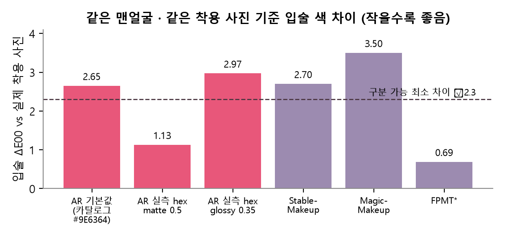
그림 13 같은 맨얼굴·같은 제품(롬앤 쥬시 래스팅 틴트 03 베어 그레이프), 정답 = 같은 사람이 실제로 바른 사진. 1명·1제품. *FPMT는 정답 사진을 레퍼런스로 넣어 순환(상한 참고). 출처 research/makeup_gen/COMPARE_LOCAL.md
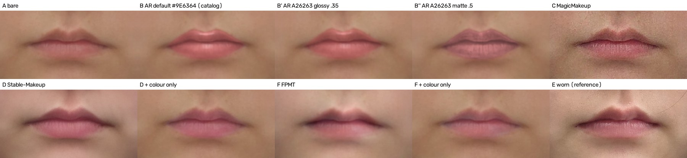